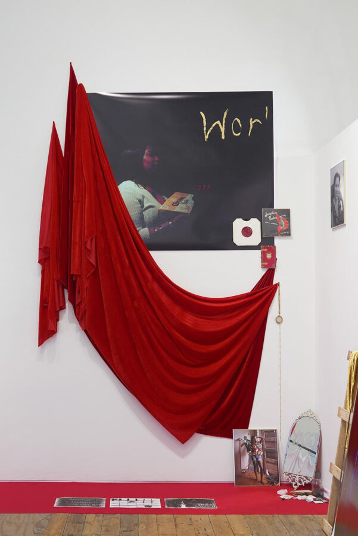

OPC: Rashayla Marie Brown (RMB)
Monday, February 16, 6PM
Logan Center for the Arts, Penthouse Room 901
“The End(s) of Suffering”
You are invited to join us for an OPC talk with artist-scholar Rashayla Marie Brown (RMB) hosted by the Open Practice Committee.
Rashayla Marie Brown (aka Professor RMB) is an undisciplinary™ artist-scholar who bends time-based media to transform narratives of power, access, and mastery. Her works examine themes of ethics, visibility, vulnerability, and perception in performance, photography, and film, often deeply regarding the context and genre in which they unfold. Bold aesthetics and a wide emotional-spiritual range unite her approach to culture and knowledge. RMB has completed projects globally, including Embassy of Foreign Artists, Geneva; Metrograph, NYC; Museum of Contemporary Art, Chicago; Museum of the African Diaspora, San Francisco; Qalam wa Lawh, Rabat; Recess, Brooklyn; Rhodes College, Memphis; Royal Academy of Arts, London; Slamdance Film Festival, Park City; and Turbine Hall, Johannesburg.
Presented by the Open Practice Committee in the Department of Visual Arts